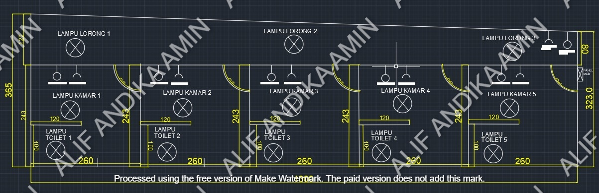
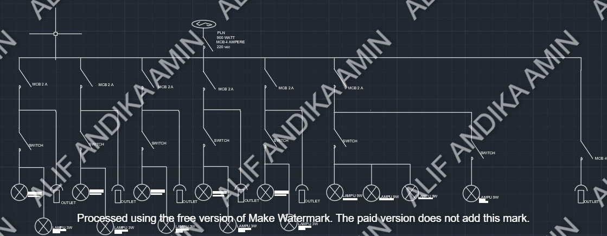
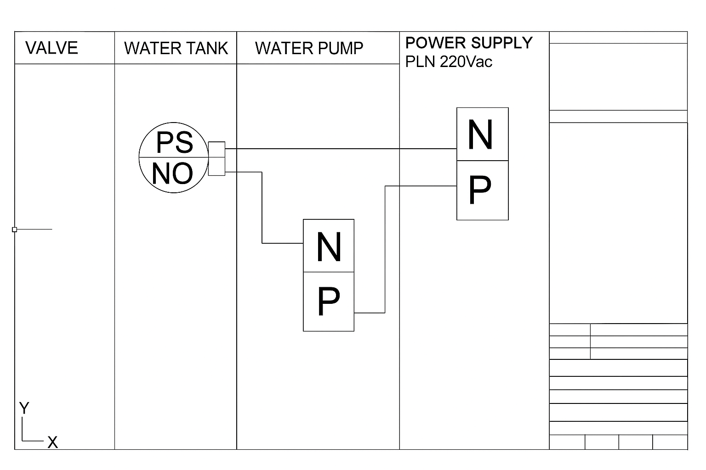
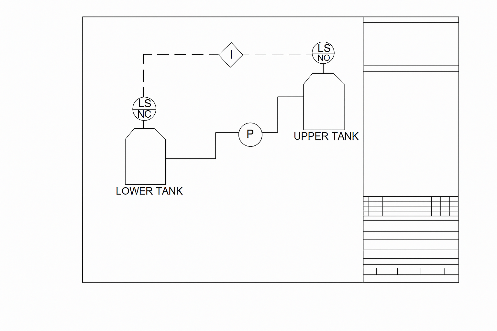

Pada project ini saya membuat Layout tiap kamar dan ruangan beserta singgle line diagram untuk rumah kos yang berisi 5 kamar. Berikut adalah layout dari rumah kos :
1.Layout
Pada layout yang saya buat rumah kos ini memiliki 5 kamar, parkir motor, dan koridor. Setiap kamar memiliki 1 kamar mandi, terdapat 3 lampu pada koridor dan MCB terletak pada parkir motor

2.Single Line Diagram
Gambar dibawah merupakan diagram satu garis (Single Line Diagram) yang menunjukkan alur distribusi listrik dari sumber PLN menuju berbagai beban seperti lampu dan stop kontak (outlet) melalui MCB (Miniature Circuit Breaker) dan saklar sebagai proteksi dan kontrol. Sumber listrik berasal dari PLN dengan daya 900 watt, tegangan 220 volt, dan dilindungi MCB utama 4 Ampere. Setiap jalur dilengkapi MCB 2A yang mengalirkan arus ke saklar, kemudian ke satu atau beberapa lampu dan outlet. Diagram ini berfungsi untuk memberikan gambaran ringkas dan sistematis mengenai sistem instalasi listrik dalam bangunan, serta digunakan sebagai panduan dalam perencanaan atau pemasangan instalasi.

Gambar yang ditunjukkan merupakan loop drawing sistem pressure pump yang digunakan untuk mendistribusikan air rumah tangga. Sistem ini berbeda dengan sistem pompa konvensional yang biasanya menggunakan dua tandon (lower tank dan upper tank). Pada pressure pump, hanya digunakan satu tandon (water tank) sebagai sumber air, sedangkan pengaturan kerja pompa dikendalikan oleh pressure switch.
LOOP DRAWING POMPA AIR
1. Komponen Utama Sistem

Water Tank
Berfungsi sebagai penampung air utama sebelum dialirkan oleh pompa.
Pressure Switch (PS, Normally Open)
Merupakan saklar otomatis yang bekerja berdasarkan tekanan air dalam pipa distribusi.
Simbol NO (Normally Open) menunjukkan bahwa pada kondisi normal kontak saklar terbuka,
dan akan menutup apabila tekanan turun.
Water Pump (P)
Pompa yang berfungsi mengalirkan air dari water tank ke jaringan distribusi rumah tangga.
Valve
Melambangkan keran atau titik keluaran air yang digunakan konsumen.
Power Supply (PLN 220 VAC)
Sumber energi listrik untuk menggerakkan pompa.
2. Prinsip Kerja Sistem
Sistem pressure pump bekerja dengan prinsip deteksi perubahan tekanan air dalam pipa distribusi.
Apabila keran dibuka, tekanan dalam pipa turun sehingga pressure switch aktif (kontak menutup).
Kondisi ini menghubungkan rangkaian listrik pompa sehingga pompa menyala dan air dipompa keluar
menuju jaringan distribusi.
Sebaliknya, apabila keran ditutup, tekanan air dalam pipa meningkat hingga mencapai batas atas
yang telah diatur pada pressure switch. Pada kondisi ini, pressure switch akan membuka kembali
sehingga aliran listrik ke pompa terputus, dan pompa berhenti bekerja.
3. Kelebihan Sistem
Tidak membutuhkan upper tank (hemat ruang instalasi).
Air bertekanan langsung tersedia di titik-titik penggunaan (keran, shower, dll.).
Sistem bekerja otomatis tanpa perlu intervensi manual.
4. Kekurangan Sistem
Pompa lebih sering hidup-mati (tergantung frekuensi penggunaan air).
Membutuhkan pressure tank tambahan jika ingin menjaga stabilitas tekanan
dan mengurangi siklus ON/OFF pompa.
Piping and Instrument Diagram
Gambar di bawah merupakan Piping and Instrumentation Diagram (P&ID) dari sistem pompa air konvensional yang digunakan untuk mengisi upper tank dari lower tank. Sistem ini bekerja dengan bantuan sensor level (level switch) yang dipasang pada kedua tangki, sehingga operasi pompa dapat dikendalikan secara otomatis.

1. Komponen Utama
Lower Tank
Tangki bawah berfungsi sebagai penampung utama air sebelum dialirkan ke tangki atas. Level Switch NC (Normally Closed)
Sensor level ini ditempatkan pada lower tank. Fungsinya untuk mendeteksi ketersediaan air. Kondisi NC menandakan bahwa selama air masih tersedia, kontak dalam keadaan tertutup sehingga pompa dapat beroperasi. Jika air habis, kontak akan terbuka dan pompa berhenti bekerja untuk mencegah kerusakan akibat kekeringan (dry run). Pump (P) Pompa berfungsi untuk mengalirkan air dari lower tank menuju upper tank. Pompa bekerja berdasarkan sinyal dari level switch di upper tank dan lower tank. Level Switch NO (Normally Open)
Sensor level ini ditempatkan pada upper tank. Kontak NO akan menutup apabila ketinggian air turun di bawah batas tertentu, sehingga memerintahkan pompa untuk menyala. Ketika air sudah penuh, kontak kembali terbuka untuk memutuskan aliran listrik ke pompa. Indicator (I) Simbol indikator digunakan sebagai penanda adanya kondisi tertentu, misalnya status operasi pompa atau status level air pada upper tank. 2. Prinsip Kerja Sistem Sistem ini bekerja berdasarkan perbedaan level air antara lower tank dan upper tank.
Kondisi air upper tank rendah → level switch NO menutup, level switch NC pada lower tank juga menutup (karena air tersedia), sehingga pompa menyala dan air dipompa dari lower tank ke upper tank.
Kondisi air upper tank penuh → level switch NO kembali terbuka sehingga aliran listrik ke pompa terputus, pompa berhenti bekerja.
Kondisi air lower tank habis → level switch NC terbuka, pompa berhenti walaupun upper tank kosong, untuk mencegah kerusakan pompa akibat bekerja tanpa air.
Kelebihan sistem
Pengisian air upper tank berlangsung otomatis.
Pompa terlindungi dari kondisi dry run.
Operasional lebih efisien karena pompa hanya menyala saat diperlukan.
Kekurangan sistem
Membutuhkan dua tangki (lower tank dan upper tank), sehingga memerlukan ruang instalasi lebih besar.
Tekanan air di rumah bergantung pada ketinggian upper tank, bukan dari pompa secara langsung.